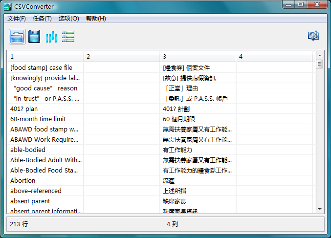
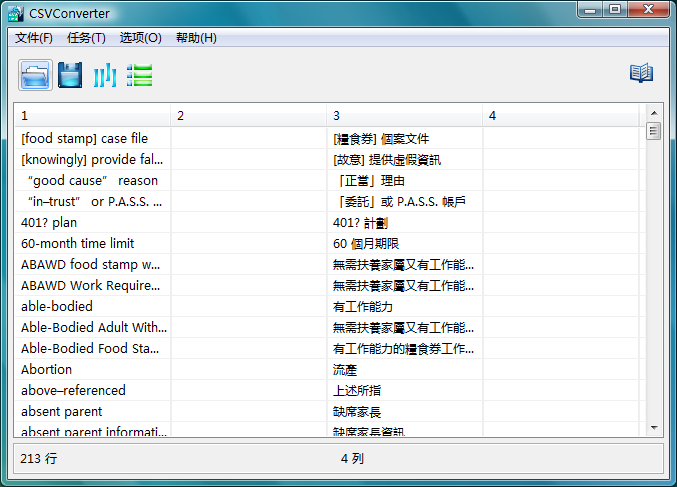

第 2 步：删除不必要的列
完成第 1 步之后，您选择的 CSV 文件便会载入并在主屏幕上显示全部内容。

CSV 文件已载入
检查每个列以便确定您需要保留哪一列，其余的列必须通过任务菜单的"删除列"选项删除，您也可以单击  显示下示的删除列对话框:
显示下示的删除列对话框:

删除列
选择您要删除的列后单击"删除选定项"按钮。若要选择超过一列，按住"Ctrl"键后单击各需要删除的列标签。
删除不需要的列之后，单击"接受"按钮回到主窗口。
第 2 步：删除不必要的列完成第 1 步之后，您选择的 CSV 文件便会载入并在主屏幕上显示全部内容。  CSV 文件已载入 检查每个列以便确定您需要保留哪一列，其余的列必须通过任务菜单的"删除列"选项删除，您也可以单击
删除列 选择您要删除的列后单击"删除选定项"按钮。若要选择超过一列，按住"Ctrl"键后单击各需要删除的列标签。 删除不需要的列之后，单击"接受"按钮回到主窗口。 |